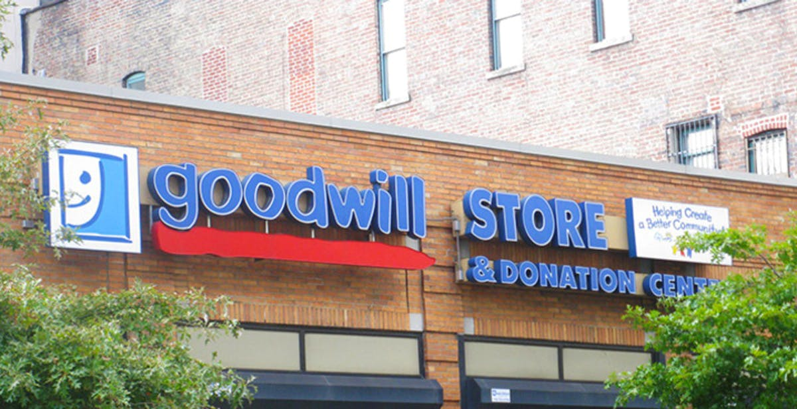

Thrifting in the City? Here is What You Need to Know.
By Camryn Quick

From DowntownBrooklyn.com
Thrifting has become increasingly popular in the younger generation as environmental awareness continues to spread. While thrifting may be considered environmentally ethical by many, it comes with it's own complications. While thrifting culture increases, so does overconsumption and the gentrification of secondhand stores. With New York City being one of the big thrifting hubs for young people, make sure you stay informed about the importance of thrifting ethically.
Using the thrift store as a place to simply discard clothes for newer, trendier ones on a cycle contributes to overconsumption. Using a thrift store to purchase clothes frequently and in large quantities only means that more clothes are still going to end up going to the landfill eventually.
Reseller culture and thrifting culture are becoming more interrelated. As resellers use the new thrifting craze for profit,thrift stores are going to become more overwhelmed and struggle to keep up with suppy and demand. This will push out the communities who rely on the store.
Buying in bulk from the thrift store contributes to gentrification. When you buy more from the store, the store has to increase supply. It gives the store an opportunity to charge more for their items, which drives out those who rely on the cheaper prices.